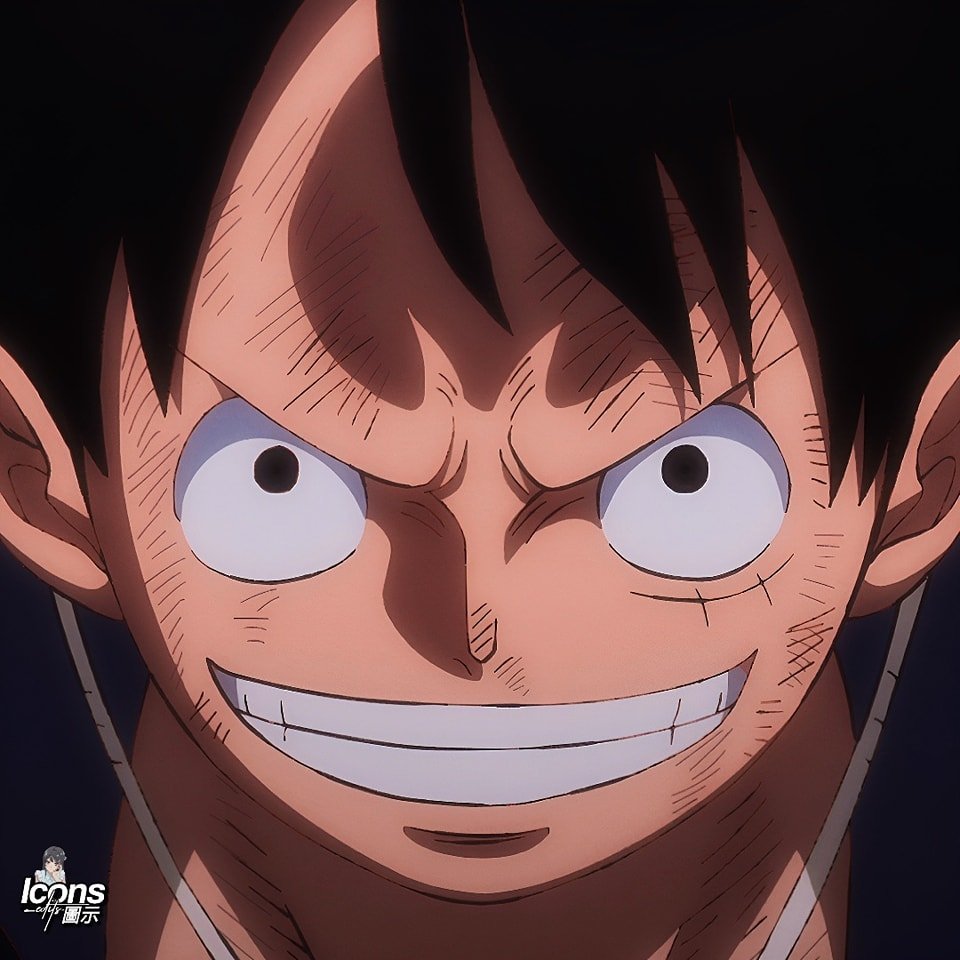

Image

Mongkey D. luffy
Toru Oikawa
Rudeus Greyrat

Thorfin Karlsefni
Euntae Lee

Mongkey D. luffy
Toru Oikawa
Rudeus Greyrat
Thorfin Karlsefni
Euntae Lee
End of the Road
Boyz II Men
Back At one
Brian Mcknigt
No Other Heart
Mc DeMarco
Always
Rex Orange County
N Side
Steve Lacy
Baguio City
Thailand
Siargao
Tokyo Japan
El Nido